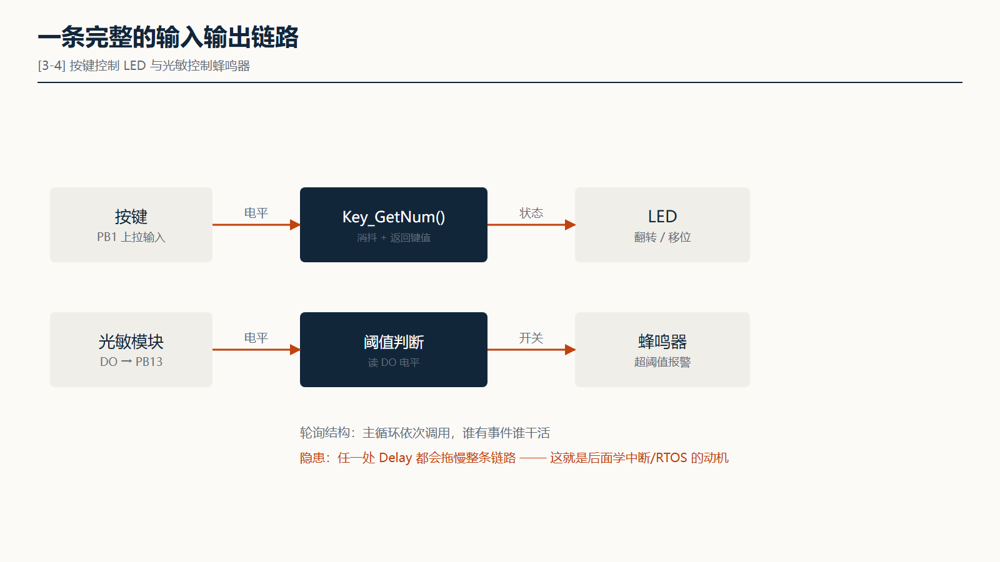

课程时长：约 33 分钟 | 深度版 | 配套结构图与看图理解
第一次做完整闭环。这一节不再教新外设，而是练代码组织：状态怎么保存、模块怎么调用、主循环怎么排。
很多人到这里会“功能堆在 main 里”，几十行 if 嵌套——这正是后面要学中断、状态机、RTOS 的起点。
实现按键翻转、移位等交互
用 static 保存跨调用状态
实现光敏阈值触发蜂鸣器
说清轮询结构的局限

图 5 输入 → 处理 → 输出的最小闭环（按键/光敏 → MCU → LED/蜂鸣器）
从左往右读：两路输入各自经过“消抖/阈值判断”变成确定的事件，再驱动两路输出。
注意图中没有“等待”，所有处理都在主循环里顺序执行——这正是轮询结构的特点，也是它的软肋：任何一处 Delay 都会让整条链路变慢。后面学中断，就是把“等待事件”从主循环里拿出来交给硬件。
| 效果 | 思路 | 要点 |
|---|---|---|
| 按一下翻转 | 保存当前状态，每次取反 | 状态变量不能是普通局部变量 |
| 按键移位 | 保存当前位置，按键后循环左移 | 注意边界回绕 |
| 长按连调 | 记录按下时长，超过阈值周期触发 | 需要时基，不能只用 Delay |
普通局部变量每次调用都重建，无法保存状态；static 局部变量放在静态区，只初始化一次，函数返回后值仍在，但作用域仍限于本函数。
static uint8_t led_state = 0;
void LED_Toggle(void)
{
led_state = !led_state;
if (led_state) LED1_ON();
else LED1_OFF();
}
int main(void)
{
LED_Init(); Key_Init(); Buzzer_Init();
while (1)
{
uint8_t key = Key_GetNum();
if (key == 1) LED_Toggle();
if (key == 2) LED_Next();
if (GPIO_ReadInputDataBit(GPIOB, GPIO_Pin_13) == 0)
Buzzer_ON();
else
Buzzer_OFF();
}
}
轮询一圈的时间决定响应延迟。如果某个分支里有 Delay_ms(500)，按键响应就会慢半拍甚至丢失。
解决办法有三层：缩短阻塞、用定时器时基做非阻塞、把事件交给中断。这一节先用最简单的轮询，后面逐步替换。
按键扫描从“每轮读电平”改成“中断置标志，主循环处理”
显示刷新从“每轮全刷”改成“有变化才刷”
多任务时用 RTOS 的队列/信号量替代共享标志
轮询的响应延迟 = 循环一圈的时间。若循环里有 Delay_ms(500)，按键延迟最坏就是 500ms——这不是按键的问题，是结构的问题。
static 局部变量放在静态区，程序启动时初始化一次；普通局部变量在栈上，每次调用重建。保存“灯的状态”必须用前者。
例：主循环一轮 2ms（含显示刷新），按键响应延迟 ≤2ms，人感觉不到；若某分支 Delay 500ms，延迟变成 500ms，表现为“按了没反应”。
结论：先量循环周期，再决定要不要拆任务。
| 错误写法 | 后果 | 正确做法 |
|---|---|---|
| 用普通局部变量存状态 | 每次调用重置，灯状态错乱 | 改 static 或全局 |
| 主循环里长延时 | 按键迟钝、显示卡顿 | 改非阻塞或定时器 |
| 输入输出写在一个函数里 | 无法单独测试 | 按模块拆分 |
| 按键不消抖直接翻转 | 一次按下闪多次 | 先消抖再触发 |
static 局部变量的生命周期：它存放在静态区，程序启动时初始化一次，函数返回不销毁；但名字只在本函数可见，比全局变量安全。用它保存“灯的当前状态”是最合适的场景。
轮询与中断的本质区别：轮询是“我主动去看”，中断是“有事叫我”。轮询实现简单、时序可预测，但实时性取决于循环一圈的时间；一旦任务变多，就必须换模型。
逐个模块单独测试，先保证输入正确再接入输出
用 LED 指示当前状态，避免“看不见内部状态”
记录从按下到响应的循环次数，估算轮询延迟
| 现象 | 原因 | 解决 |
|---|---|---|
| 按一下灯闪两下 | 抖动未处理或松手又触发 | 消抖 + 等待松手 |
| 状态和实际不符 | 变量被重复初始化 | 改用 static |
| 光敏一直报警 | 阈值过灵敏或接错脚 | 转电位器、核对引脚 |
| 加了 Delay 后按键迟钝 | 主循环被阻塞 | 改非阻塞或中断 |
Q1. static 局部变量和全局变量的区别？
A：作用域不同：static 只在函数内可见，生命周期相同。
Q2. 为什么按键要“等松手”？
A：否则按住期间每轮都触发，表现为连击。
Q3. 轮询最大的缺点？
A：任一任务阻塞会拖慢全部任务。
Q4. 怎么做到非阻塞？
A：用时间戳/状态机，每轮只推进状态。
Q5. 输入输出为什么要解耦？
A：模块只做一件事，便于测试与复用。
Q6. 什么时候该上中断？
A：事件稀疏、对响应时间有要求时。
Q7. 怎么测量循环周期？
A：在循环首尾翻转 GPIO，示波器看周期。
Q8. 什么时候必须上 RTOS？
A：任务多、优先级明确、需要阻塞与同步时。
1. 保存 LED 状态用什么变量？
答：static 或全局。
2. 按键移位越界怎么处理？
答：回绕到第一位。
3. 光敏控制蜂鸣器的判断依据？
答：DO 电平。
4. 为什么要逐模块测试？
答：定位问题更快，避免互相干扰。
☐ 会写按键翻转
☐ 会用 static 保存状态
☐ 能接光敏控制蜂鸣器
☐ 能说出轮询的局限